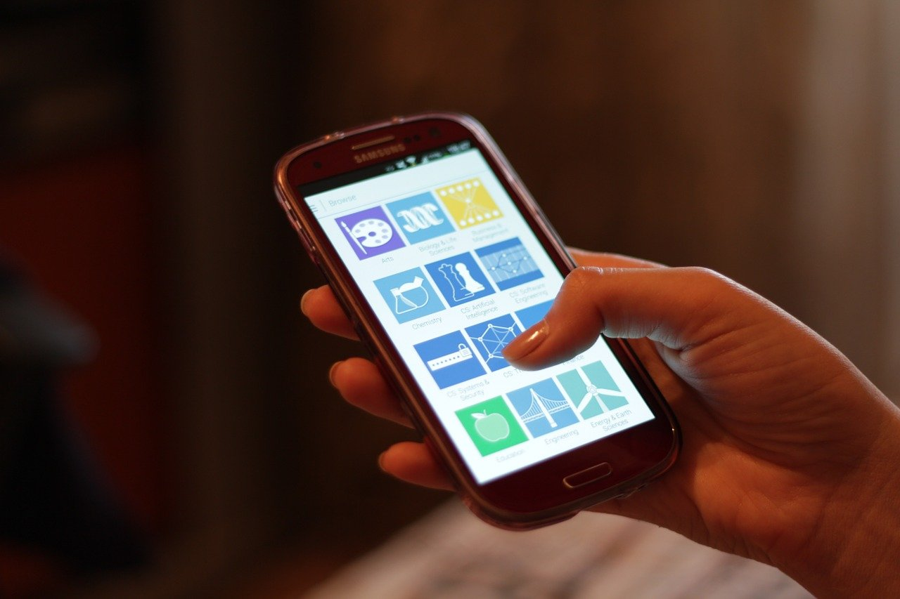

Ijtimoiy tarmoq algoritmlari va «filtr pufagi» qanday ishlaydi: tasma nega aynan shuni ko'rsatadi
Facebook, Instagram, YouTube, TikTok va X'dagi tasma vaqt tartibida emas, algoritm tomonidan saralanadi. Ushbu ma'lumotnoma algoritmik tasma qanday ishlashini, «filtr pufagi» va «aks-sado kamerasi» tushunchalarini, bu borada ilmiy dalillar nima deyishini va Yevropa Ittifoqining yangi qoidalarini manbalarga asoslangan faktlar bilan tushuntiradi.

Ijtimoiy tarmoqda ko'rinadigan postlar ketma-ketligi tasodifiy ham, oddiy vaqt tartibida ham emas. Facebook, Instagram, YouTube, TikTok va X (sobiq Twitter) kabi platformalarda kontentni tavsiya tizimi (ingl. recommender system) — ya'ni algoritm saralaydi va tartiblaydi. Algoritm har bir foydalanuvchi uchun qaysi postni yuqoriga chiqarishni bashorat qilingan qiziqish (engagement) asosida hal qiladi.
Algoritmik tasma nima
Algoritmik tasma — bu kontentni vaqt bo'yicha emas, balki ko'plab signallarni hisobga olib tartiblaydigan tizim. Signallarga odatda postni tomosha qilish vaqti, like, izoh, ulashish, saqlash, hisobga obuna bo'lish va ekranda qancha vaqt to'xtab turilgani (dwell time) kiradi. Tizim shu ma'lumotlar asosida foydalanuvchi qaysi kontentga munosabat bildirishini bashorat qiladi va ehtimoli yuqori postlarni yuqoriga ko'taradi. (Manba: Reuters jurnalistika instituti.)
«Filtr pufagi» tushunchasi
«Filtr pufagi» (ingl. filter bubble) atamasini internet-faol Eli Pariser 2011-yilda chop etilgan «The Filter Bubble» kitobida kiritgan. U shunday holatni nazarda tutgan: qidiruv tizimlari va ijtimoiy tarmoqlar natijalarni shaxsiylashtirgani (personalizatsiya) sari har bir foydalanuvchi atrofida o'ziga xos, alohida axborot olami shakllanadi va umumiy, barcha uchun bir xil bo'lgan ma'lumot maydoni yemiriladi. Pariserning fikricha, personalizatsiya algoritmlari neytral vosita emas — ular qaysi kontentni ko'rsatishni tanlab, dunyo haqidagi tasavvurimizga ta'sir qiladi. (Manba: Eli Pariser, «The Filter Bubble», 2011.)

Filtr pufagi va aks-sado kamerasi farqi
«Filtr pufagi» va «aks-sado kamerasi» (ingl. echo chamber) ko'pincha bir ma'noda ishlatiladi, lekin ular bir xil emas. Filtr pufagi — foydalanuvchining ongli tanlovisiz, passiv ravishda algoritm tomonidan yuzaga keltiriladigan holat. Aks-sado kamerasi esa kengroq tushuncha: unda inson o'z e'tiqodini mustahkamlaydigan manbalarnigina (masalan, faqat ma'lum obunalar yoki guruhlarni ongli tanlab) o'qiydi. Ya'ni filtr pufagini asosan algoritm, aks-sado kamerasini esa ko'proq insonning o'z tanlovi hosil qiladi. (Manba: Reuters jurnalistika instituti.)
Qiziqishga qaratilgan saralash
Tavsiya algoritmlari odatda foydalanuvchini platformada ushlab turish — qiziqish va kontent iste'molini oshirish uchun sozlanadi. Shu sababli hissiy, keskin yoki e'tiborni tez tortadigan kontent yuqoriga ko'tarilishi mumkin, chunki u ko'proq munosabat (like, izoh, ulashish) keltiradi. Bu mexanizm foydalanuvchiga nima muhim emas, balki uning e'tiborini nima ushlab turishini asos qilib oladi.
Dalillar nima deydi
Filtr pufagi mashhur tushuncha bo'lsa-da, ilmiy dalillar bir xil emas. Reuters jurnalistika instituti 2022-yilda chop etgan ilmiy adabiyotlar sharhiga ko'ra, algoritmik saralash avtomatik ravishda aks-sado kamerasiga olib keladi degan gipotezaga keng tasdiq topilmagan; ba'zi tadqiqotlar qidiruv tizimlari va ijtimoiy tarmoqlarga tayanadigan odamlar aksincha biroz xilma-xilroq yangiliklarga duch kelishini ko'rsatgan. Ko'pchilik uchun asosiy muammo «pufak»ning o'zi emas, balki siyosiy qutblanish, noto'g'ri ma'lumot va yangiliklardan umuman uzoqlashish bo'lishi mumkin. (Manba: Reuters jurnalistika instituti, 2022.)
Qonuniy javob: Yevropa Ittifoqi qoidalari
Yevropa Ittifoqining Raqamli xizmatlar to'g'risidagi akti (Digital Services Act, DSA) 2024-yil 17-fevraldan to'liq kuchga kirgan. Unga ko'ra, juda yirik onlayn platformalar tavsiya tizimining asosiy parametrlarini oshkor qilishi, shuningdek foydalanuvchiga kamida bitta — profil tuzishga (profiling) asoslanmagan — tasma varianti taklif qilishi shart. Bu, masalan, shaxsiylashtirmagan yoki vaqt tartibidagi tasmani tanlash imkonini beradi. (Manba: Yevropa komissiyasi, Digital Services Act.)
Platformalarda mavjud sozlamalar
Ko'pchilik platforma foydalanuvchiga tasmani qisman boshqarish vositalarini beradi. Masalan, ba'zi ilovalarda vaqt tartibidagi («Following» yoki «Latest») tasmaga o'tish, «bu menga qiziq emas» tugmasi orqali kontentni kamaytirish, ayrim hisob yoki mavzularni bloklash yoxud yashirish, qidiruv va tomosha tarixini tozalash mumkin. Bu — algoritm ishlatadigan signallarni o'zgartiradigan faktik imkoniyatlar; ularning mavjudligi platformadan platformaga farq qiladi.
Xulosa
Media savodxonligining o'zagi — tasma kimdir tomonidan saralanganini anglash. Ko'rayotgan narsangiz butun haqiqat emas, balki algoritm siz uchun tanlagan tasvir ekanini bilish, manbani va sanani tekshirish hamda turli manbalarga ongli murojaat qilish axborotni to'g'ri tushunishning kalitidir. Filtr pufagi va aks-sado kamerasini aralashtirmaslik, dalillarni sinchiklab baholash ham shu savodxonlikning bir qismidir.